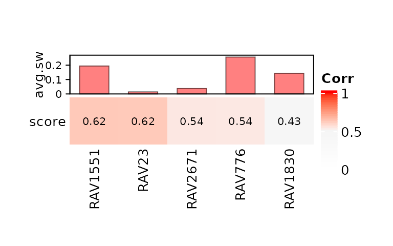
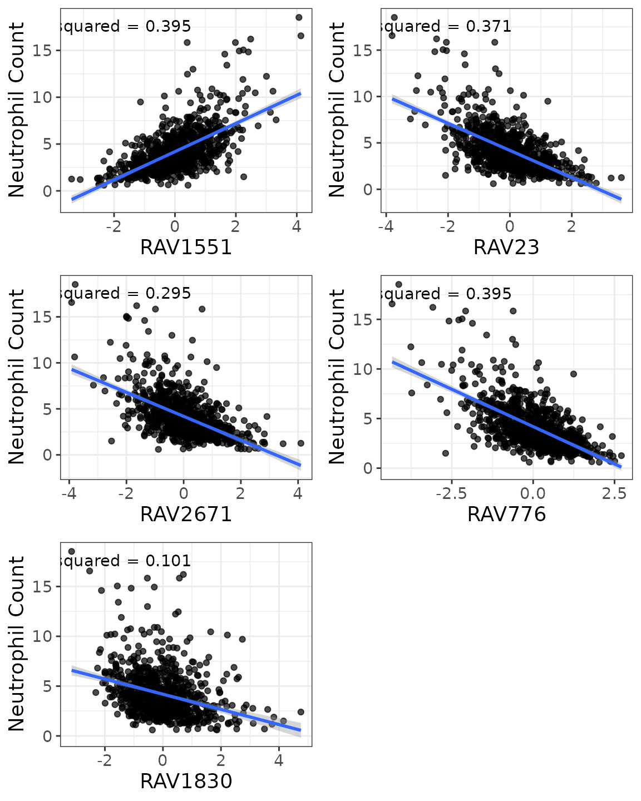
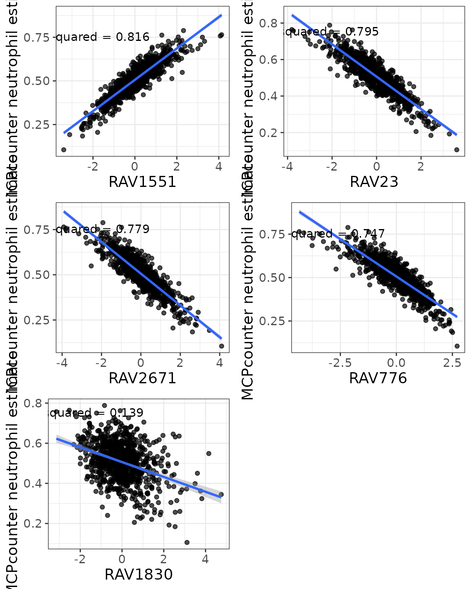
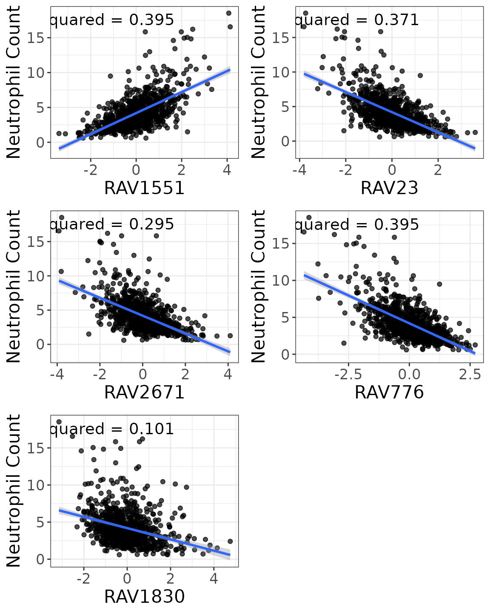
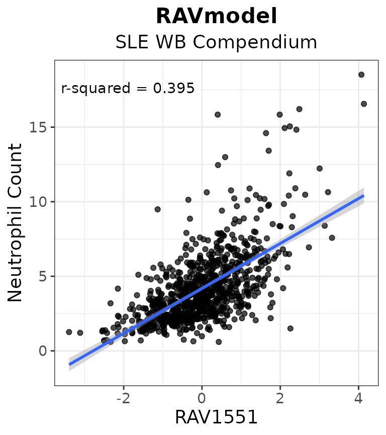
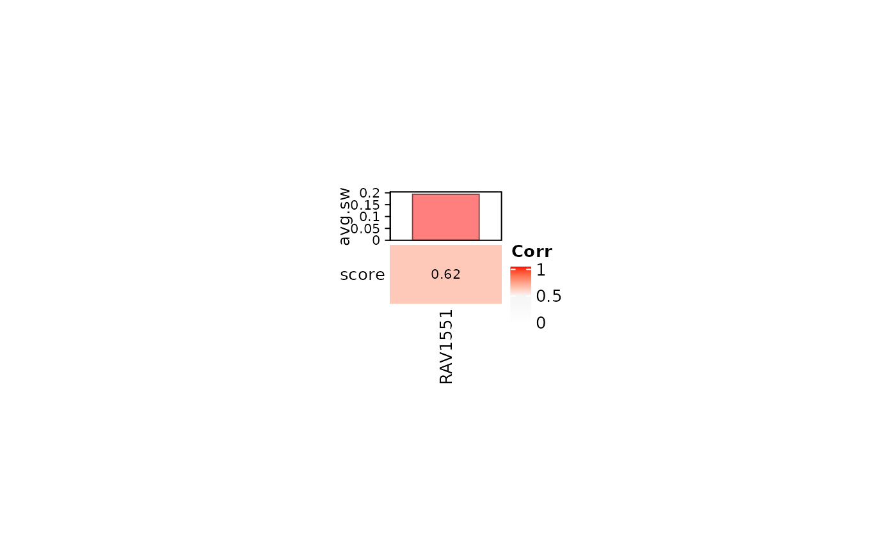

vignettes/SLE-WB/repeat_Fig3_SLE-WB.Rmd
repeat_Fig3_SLE-WB.RmdIn this vignette, we are reproducing Figure 3 of the multiPLIER paper using GenomicSuperSignature and referencing some script from this vignette.
To directly compare with the results from multiPLIER paper, we used the RAVmodel annotated with the same priors: bloodCellMarkersIRISDMAP, svmMarkers, and canonicalPathways.
data.dir <- system.file("extdata", package = "GenomicSuperSignaturePaper")
RAVmodel <- readRDS(file.path(data.dir, "RAVmodel_PLIERpriors.rds"))
RAVmodel#> class: PCAGenomicSignatures
#> dim: 13934 4764
#> metadata(7): cluster size ... updateNote version
#> assays(1): model
#> rownames(13934): CASKIN1 DDX3Y ... CTC-457E21.9 AC007966.1
#> rowData names(0):
#> colnames(4764): RAV1 RAV2 ... RAV4763 RAV4764
#> colData names(4): RAV studies silhouetteWidth gsea
#> trainingData(2): PCAsummary MeSH
#> trainingData names(536): DRP000987 SRP059172 ... SRP164913 SRP188526
updateNote(RAVmodel)#> [1] "536 refine.bio studies/ top 90% varying genes/ GSEA with 3 priors from PLIER (bloodCellMarkersIRISDMAP, svmMarkers, and canonicalPathways)"Processed expression data is downloaded from here.
fname <- "data/SLE_WB_all_microarray_QN_zto_before_with_GeneSymbol.pcl"
exprs <- readr::read_tsv(fname) %>% as.data.frame
rownames(exprs) <- exprs$GeneSymbol
dataset <- as.matrix(exprs[,3:ncol(exprs)]) # 15,825 genes x 1,640 samples
dataset[1:2, 1:4]#> GSM955680_DNA10204-001.CEL GSM955681_DNA10204-003.CEL
#> NAT2 0.2872200 0.6788542
#> ADA 0.7331941 0.6073631
#> GSM955682_DNA10204-005.CEL GSM955683_DNA10204-007.CEL
#> NAT2 0.0000000 0.4627302
#> ADA 0.5483356 0.4294504Metadata is downloaded from here.
meta <- read.table("data/E-GEOD-65391.sdrf.txt", sep = "\t", header = TRUE)
## 966 samples have metadata
dim(meta)
#> [1] 996 224
## Neutrophil count
ind <- grep("neutrophil", colnames(meta), ignore.case = TRUE)
colnames(meta)[ind]
#> [1] "Characteristics..neutrophil_count."
#> [2] "Characteristics..neutrophil_percent."
#> [3] "FactorValue..neutrophil_count."
#> [4] "FactorValue..neutrophil_percent."
neutrophilCount <- meta[,c("Source.Name", "Characteristics..neutrophil_count.")]
## Clean the `Source.Name` column
cleaned_name <- sapply(neutrophilCount[,1],
function(x) stringr::str_split(x, " ")[[1]][1])
neutrophilCount[,1] <- cleaned_name
## 143 NAs introduced by coercion due to the missing data
neutrophilCount[,2] <- as.numeric(neutrophilCount[,2])
na_ind <- which(is.na(as.numeric(neutrophilCount[,2])))
## 853 samples with metadata after clean-up
neutrophilCount <- neutrophilCount[-na_ind,]
colnames(neutrophilCount)[2] <- "Neutrophil.Count"
head(neutrophilCount, 3)#> Source.Name Neutrophil.Count
#> 1 GSM1595222 12.23
#> 2 GSM1595221 6.20
#> 3 GSM1595220 3.50Neutrophil count itself showed a somewhat weak correlation, and the authors suggest that it is likely because neutrophils are terminally differentiated cells, so it is a limitation of using gene expression as a measure of neutrophil count rather than a limitation intrinsic to PLIER models or the multiPLIER approach.
Use MCPcounter to estimate cell type abundance in solid tissues.
## Get cell type estimates with MCPcounter
mcp.results <- MCPcounter::MCPcounter.estimate(expression = dataset,
featuresType = "HUGO_symbols")
## Subset only the neutrophil estimates
neutrophil.df <- reshape2::melt(mcp.results) %>%
dplyr::filter(Var1 == "Neutrophils") %>%
dplyr::select(-Var1)
colnames(neutrophil.df) <- c("Sample", "Neutrophil_estimate")
val_all <- validate(dataset, RAVmodel)
validated_ind <- validatedSignatures(val_all, num.out = 5,
swCutoff = 0, indexOnly = TRUE)
heatmapTable(val_all, num.out = 5, swCutoff = 0)
## RAVs containing the keyword, "neutrophil", within top 3 enriched pathways
findSignature(RAVmodel, "neutrophil", n = 3)#> # of keyword-containing pathways Freq
#> 1 0 4651
#> 2 1 100
#> 3 2 13
## RAVs with two keyword-containing pathways
sig_ind <- findSignature(RAVmodel, "neutrophil", n = 3, k = 2)We used r-squared value to identify the metadata-associated RAV. (r-squared is the proportion of the variance in the dependent variable that is predictable from the independent variable)
calculateRsq <- function (x, y) cor(x, y) ^ 2
rsq <- function(data, lv, y.var = "Neutrophil_estimate") {
res <- calculateRsq(data[, lv], data[, y.var]) %>% round(., 3)
return(res)
}
sampleScore_sub <- sampleScore[,validated_ind] %>% as.data.frame
sampleScore_sub$Source.Name <- rownames(sampleScore_sub)
dat_n.count <- dplyr::left_join(neutrophilCount, sampleScore_sub,
by = "Source.Name")
head(dat_n.count, 3)#> Source.Name Neutrophil.Count RAV1551 RAV23 RAV2671 RAV776
#> 1 GSM1595222 12.23 3.0043652 -2.9752190 -2.5626217 -3.7585385
#> 2 GSM1595221 6.20 1.2174456 -1.2722006 -0.2296332 -1.3472067
#> 3 GSM1595220 3.50 -0.4207508 0.3739369 0.7214394 0.5571763
#> RAV1830
#> 1 0.4322945
#> 2 2.2002468
#> 3 -0.0339016Top RAVs with the high correlation (r-squared) with the metadata, neutrophil count.
rsq_all <- sapply(3:ncol(dat_n.count),
function(x) {rsq(dat_n.count, x, y.var = "Neutrophil.Count")})
names(rsq_all) <- colnames(dat_n.count)[3:ncol(dat_n.count)]
rsq_all <- sort(rsq_all, decreasing = TRUE)
head(names(rsq_all))#> [1] "RAV1551" "RAV776" "RAV23" "RAV2671" "RAV1830"
sampleScore.df <- sampleScore %>% as.data.frame(.) %>%
tibble::rownames_to_column(.)
colnames(sampleScore.df)[1] <- "Sample"
## Join all the scores with neutrophil estimates
dat_n.estimate <- dplyr::inner_join(neutrophil.df, sampleScore.df, by = "Sample")
dim(dat_n.estimate)#> [1] 853 4766
dat_n.estimate[1:4, 1:4]#> Sample Neutrophil_estimate RAV1 RAV2
#> 1 GSM1594269 0.5210433 -0.8040057 0.70872695
#> 2 GSM1594270 0.4624522 0.9403239 -1.13442804
#> 3 GSM1594271 0.6052038 -1.1120027 2.28676223
#> 4 GSM1594273 0.3782767 0.3042759 -0.01665221Top RAVs with the high correlation (r-squared) with the neutrophil estimate.
rsq_all <- sapply(3:ncol(dat_n.estimate), function(x) {rsq(dat_n.estimate,x)})
names(rsq_all) <- colnames(dat_n.estimate)[3:ncol(dat_n.estimate)]
rsq_all <- sort(rsq_all, decreasing = TRUE)
head(names(rsq_all))#> [1] "RAV1551" "RAV7" "RAV1073" "RAV2632" "RAV23" "RAV2671"Scores from the validated indexes are compared to the nuetrophil counts.
plots <- list()
for (i in seq_along(validated_ind)) {
plot <- LVScatter(dat_n.count, paste0("RAV", validated_ind[i]),
y.var = "Neutrophil.Count",
ylab = "Neutrophil Count")
plots[[i]] <- plot
}
gridExtra::grid.arrange(grobs = plots, cols = 2)
Scores from the validated indexes are compared to the nuetrophil estimates.
plots <- list()
for (i in seq_along(validated_ind)) {
plot <- LVScatter(dat_n.estimate, paste0("RAV", validated_ind[i]),
y.var = "Neutrophil_estimate",
ylab = "MCPcounter neutrophil estimate")
plots[[i]] <- plot
}
gridExtra::grid.arrange(grobs = plots, cols = 2)
We found RAVs that contain the keyword, “neutrophil”, most in their GSEA result and their indexes are saved in sig_ind.
plots <- list()
for (i in seq_along(sig_ind)) {
plot <- LVScatter(dat_n.estimate, paste0("RAV", sig_ind[i]),
y.var = "Neutrophil_estimate",
ylab = "MCPcounter neutrophil estimate")
plots[[i]] <- plot
}
gridExtra::grid.arrange(grobs = plots, cols = 3)
We recovered RAV1551 as a neutrophil-associated signature through validation, GSEA, metadata-association.
count_plot <- LVScatter(dat_n.count, paste0("RAV", 1551),
y.var = "Neutrophil.Count",
ylab = "Neutrophil Count",
title = "RAVmodel",
subtitle = "SLE WB Compendium")
count_plot
estimate_plot <- LVScatter(dat_n.estimate, paste0("RAV", 1551),
y.var = "Neutrophil_estimate",
ylab = "MCPcounter neutrophil estimate",
title = "RAVmodel",
subtitle = "SLE WB MCPcounter")
estimate_plot
All the enriched pathways for RAV1551 with the minimum p-value of 1.827751210^{-9}
#> [1] "IRIS_Neutrophil-Resting"
#> [2] "IRIS_Monocyte-Day0"
#> [3] "SVM Neutrophils"
#> [4] "DMAP_MONO2"
#> [5] "SVM Monocytes"
#> [6] "DMAP_GRAN2"
#> [7] "DMAP_MONO1"
#> [8] "IRIS_Monocyte-Day1"
#> [9] "IRIS_Monocyte-Day7"
#> [10] "REACTOME_METABOLISM_OF_PROTEINS"
#> [11] "REACTOME_INFLUENZA_LIFE_CYCLE"
#> [12] "MIPS_55S_RIBOSOME_MITOCHONDRIAL"
#> [13] "REACTOME_TRANSLATION"
#> [14] "REACTOME_3_UTR_MEDIATED_TRANSLATIONAL_REGULATION"
#> [15] "DMAP_TCELLA2"
#> [16] "REACTOME_INFLUENZA_VIRAL_RNA_TRANSCRIPTION_AND_REPLICATION"
#> [17] "MIPS_NOP56P_ASSOCIATED_PRE_RRNA_COMPLEX"
#> [18] "REACTOME_NONSENSE_MEDIATED_DECAY_ENHANCED_BY_THE_EXON_JUNCTION_COMPLEX"
#> [19] "KEGG_RIBOSOME"
#> [20] "MIPS_RIBOSOME_CYTOPLASMIC"
#> [21] "REACTOME_PEPTIDE_CHAIN_ELONGATION"
#> [22] "REACTOME_SRP_DEPENDENT_COTRANSLATIONAL_PROTEIN_TARGETING_TO_MEMBRANE"NES-ranked, keyword-containing pathways were placed 1/3 out of 22
#> Description NES qvalues
#> IRIS_Neutrophil-Resting IRIS_Neutrophil-Resting 4.253400 1.827751e-09
#> SVM Neutrophils SVM Neutrophils 3.311116 1.827751e-09
annotatePC(1:3, val_all = val_all, PCAmodel = RAVmodel)#> PC1-RAV1551 PC2-noAnnot PC3-noAnnot
#> 1 IRIS_Neutrophil-Resting No significant pathways No significant pathways
#> 2 IRIS_Monocyte-Day0 No significant pathways No significant pathways
#> 3 SVM Neutrophils No significant pathways No significant pathways
#> 4 DMAP_MONO2 No significant pathways No significant pathways
#> 5 SVM Monocytes No significant pathways No significant pathways
annotatePC(c(1,8), val_all = val_all, PCAmodel = RAVmodel, simplify = FALSE)#> $`PC1-RAV1551`
#> Description NES pvalue qvalues
#> 1 IRIS_Neutrophil-Resting 4.253400 1e-10 1.827751e-09
#> 2 IRIS_Monocyte-Day0 3.452230 1e-10 1.827751e-09
#> 3 SVM Neutrophils 3.311116 1e-10 1.827751e-09
#> 4 DMAP_MONO2 3.153644 1e-10 1.827751e-09
#> 5 SVM Monocytes 3.107646 1e-10 1.827751e-09
#>
#> $`PC8-noAnnot`
#> Description NES pvalue qvalues
#> 1 No significant pathways NA NA NA
#> 2 No significant pathways NA NA NA
#> 3 No significant pathways NA NA NA
#> 4 No significant pathways NA NA NA
#> 5 No significant pathways NA NA NA#> R version 4.0.3 (2020-10-10)
#> Platform: x86_64-pc-linux-gnu (64-bit)
#> Running under: Ubuntu 18.04.5 LTS
#>
#> Matrix products: default
#> BLAS: /usr/lib/x86_64-linux-gnu/openblas/libblas.so.3
#> LAPACK: /usr/lib/x86_64-linux-gnu/libopenblasp-r0.2.20.so
#>
#> locale:
#> [1] LC_CTYPE=en_US.UTF-8 LC_NUMERIC=C
#> [3] LC_TIME=en_US.UTF-8 LC_COLLATE=en_US.UTF-8
#> [5] LC_MONETARY=en_US.UTF-8 LC_MESSAGES=en_US.UTF-8
#> [7] LC_PAPER=en_US.UTF-8 LC_NAME=C
#> [9] LC_ADDRESS=C LC_TELEPHONE=C
#> [11] LC_MEASUREMENT=en_US.UTF-8 LC_IDENTIFICATION=C
#>
#> attached base packages:
#> [1] parallel stats4 stats graphics grDevices utils datasets
#> [8] methods base
#>
#> other attached packages:
#> [1] dplyr_1.0.2 GenomicSuperSignaturePaper_0.0.3
#> [3] GenomicSuperSignature_0.0.6 SummarizedExperiment_1.20.0
#> [5] Biobase_2.50.0 GenomicRanges_1.42.0
#> [7] GenomeInfoDb_1.26.2 IRanges_2.24.1
#> [9] S4Vectors_0.28.1 BiocGenerics_0.36.0
#> [11] MatrixGenerics_1.2.0 matrixStats_0.57.0
#> [13] BiocStyle_2.18.1
#>
#> loaded via a namespace (and not attached):
#> [1] colorspace_2.0-0 ggsignif_0.6.0 rjson_0.2.20
#> [4] ellipsis_0.3.1 rio_0.5.16 rprojroot_2.0.2
#> [7] circlize_0.4.11 XVector_0.30.0 GlobalOptions_0.1.2
#> [10] fs_1.5.0 clue_0.3-58 rstudioapi_0.13
#> [13] farver_2.0.3 ggpubr_0.4.0 bit64_4.0.5
#> [16] fansi_0.4.1 splines_4.0.3 knitr_1.30
#> [19] Cairo_1.5-12.2 broom_0.7.2 cluster_2.1.0
#> [22] dbplyr_2.0.0 png_0.1-7 BiocManager_1.30.10
#> [25] readr_1.4.0 compiler_4.0.3 httr_1.4.2
#> [28] backports_1.2.1 assertthat_0.2.1 Matrix_1.2-18
#> [31] cli_2.2.0 htmltools_0.5.0 tools_4.0.3
#> [34] gtable_0.3.0 glue_1.4.2 GenomeInfoDbData_1.2.4
#> [37] reshape2_1.4.4 rappdirs_0.3.1 Rcpp_1.0.5
#> [40] carData_3.0-4 cellranger_1.1.0 pkgdown_1.6.1
#> [43] vctrs_0.3.5 nlme_3.1-151 xfun_0.19
#> [46] stringr_1.4.0 openxlsx_4.2.3 lifecycle_0.2.0
#> [49] rstatix_0.6.0 zlibbioc_1.36.0 scales_1.1.1
#> [52] ragg_0.4.0 hms_0.5.3 RColorBrewer_1.1-2
#> [55] ComplexHeatmap_2.6.2 yaml_2.2.1 curl_4.3
#> [58] memoise_1.1.0 gridExtra_2.3 ggplot2_3.3.2
#> [61] stringi_1.5.3 RSQLite_2.2.1 desc_1.2.0
#> [64] zip_2.1.1 shape_1.4.5 rlang_0.4.9
#> [67] pkgconfig_2.0.3 systemfonts_0.3.2 bitops_1.0-6
#> [70] evaluate_0.14 lattice_0.20-41 purrr_0.3.4
#> [73] labeling_0.4.2 bit_4.0.4 tidyselect_1.1.0
#> [76] plyr_1.8.6 magrittr_2.0.1 bookdown_0.21
#> [79] R6_2.5.0 magick_2.5.2 generics_0.1.0
#> [82] DelayedArray_0.16.0 DBI_1.1.0 mgcv_1.8-33
#> [85] pillar_1.4.7 haven_2.3.1 foreign_0.8-79
#> [88] abind_1.4-5 RCurl_1.98-1.2 tibble_3.0.4
#> [91] crayon_1.3.4 car_3.0-10 wordcloud_2.6
#> [94] BiocFileCache_1.14.0 rmarkdown_2.6 GetoptLong_1.0.4
#> [97] grid_4.0.3 readxl_1.3.1 data.table_1.13.4
#> [100] blob_1.2.1 forcats_0.5.0 digest_0.6.27
#> [103] tidyr_1.1.2 MCPcounter_1.1.0 textshaping_0.2.1
#> [106] munsell_0.5.0